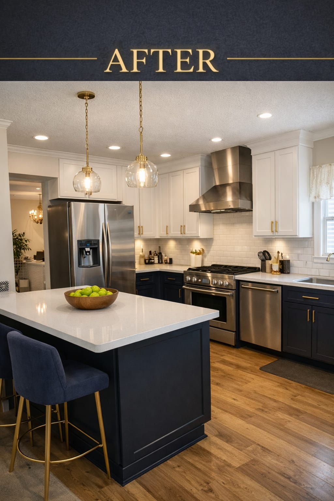
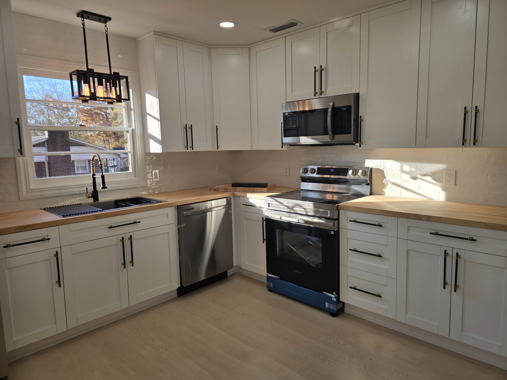
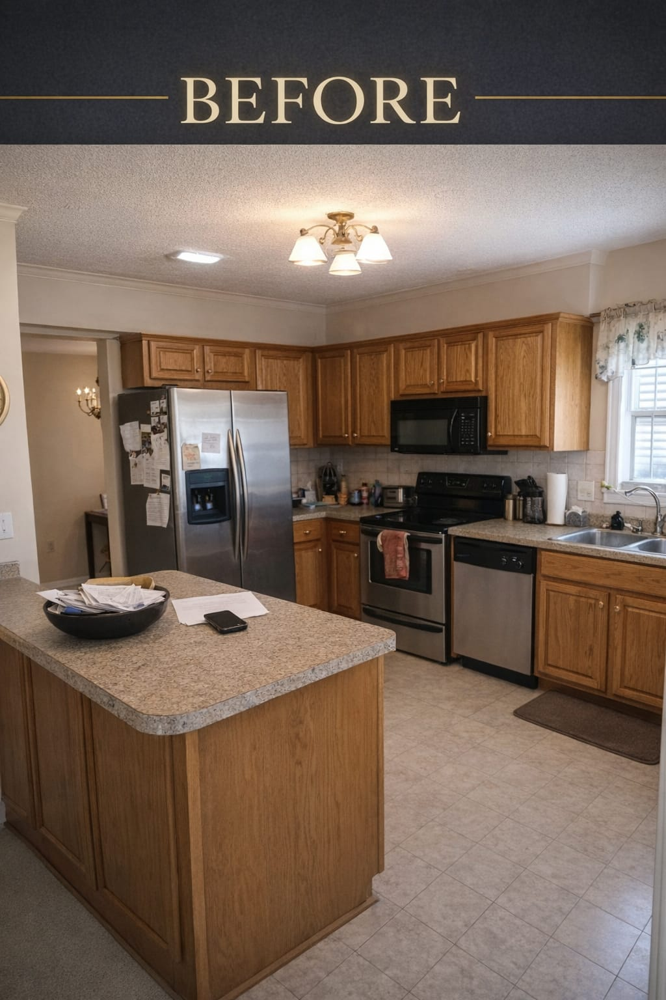
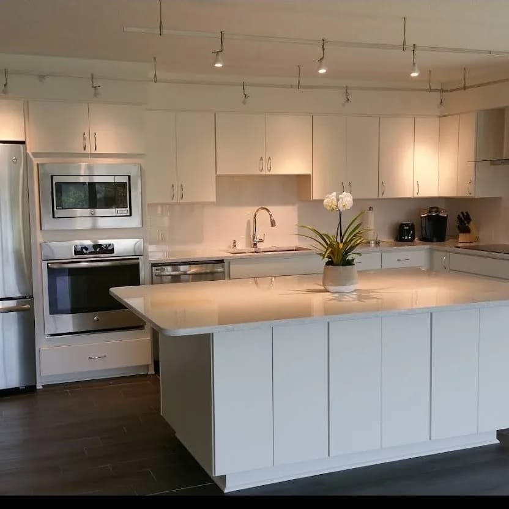
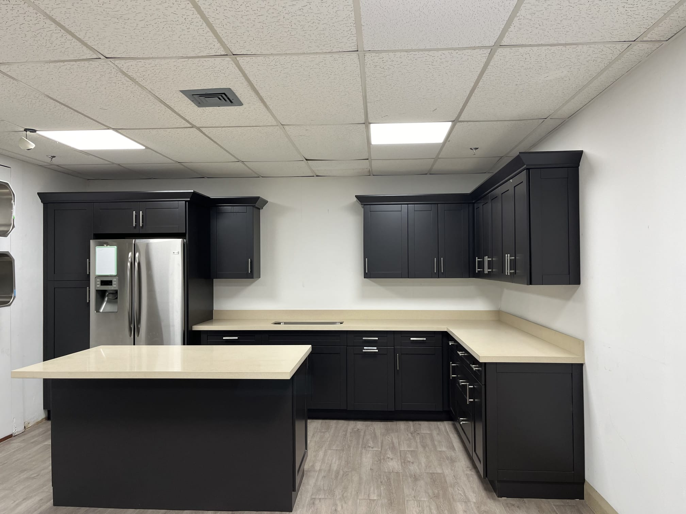
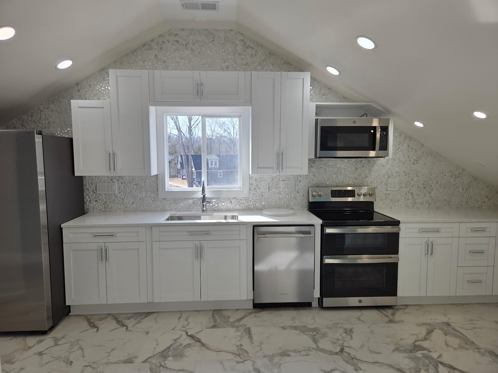
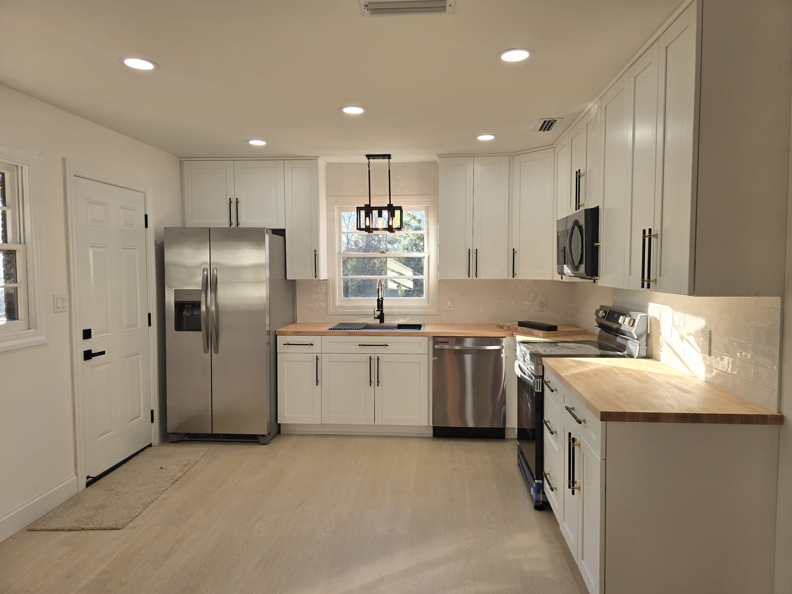

Concord, NC & Greater Charlotte
Custom cabinets · Quartz countertops · Islands · Full gut remodels
Licensed & Insured — Serving Concord & Charlotte Since Day One
Kitchen Remodeling Concord NC
Most kitchens in the Concord area were built for a different era — closed layouts, limited counter space, and cabinets that don't work the way modern families live. G&R Landmark transforms those kitchens into the spaces homeowners actually want: open, functional, and beautiful.
We handle every part of the remodel in-house — cabinets, countertops, flooring, electrical, plumbing, tile, and paint — so you deal with one contractor, one timeline, and one point of contact from start to finish.

Investment Guide
Every kitchen is different, and prices vary based on size, materials, and scope. Here's a realistic guide to what Concord homeowners typically invest in their kitchen remodel.
New countertops, backsplash, cabinet hardware, fresh paint, and lighting updates. Same layout — updated look. Ideal for kitchens that function well but look dated.
New custom or semi-custom cabinets, quartz countertops, tile backsplash, new flooring, updated lighting, new sink and faucet, and appliance installation. Most popular scope for Concord homeowners.
Full layout redesign, wall removal, custom cabinetry, premium countertops, island addition, relocation of plumbing or electrical, high-end appliances, and complete finish upgrade.
Prices are estimates based on typical Concord, NC projects. Your exact cost depends on kitchen size, material selections, and scope. Get a free written estimate from G&R Landmark — no pressure, no obligation.
How It Works
We've built a clear, stress-free process so you always know what to expect — from first call to final walkthrough.
We visit your Concord home, assess your kitchen, listen to your goals, and give you a detailed written quote. No pressure, no obligation.
We finalize cabinet styles, countertop materials, backsplash, flooring, and fixtures — helping you make decisions that fit your style and budget.
We pull all required Concord permits, order materials, and give you a firm start date and completion timeline before any work begins.
Our crew completes the full remodel on schedule. You do a final walkthrough with us to confirm everything is perfect before we consider the job done.
Our Work
Every project starts with a conversation about how you want your kitchen to feel. Here's a look at recent work from G&R Landmark homeowners.





Why Concord Homeowners Choose Us
We're not a national chain or a lead-generation middleman. G&R Landmark is a family-owned contractor based right here in the Concord area — and our reputation in this community is everything to us.
No verbal estimates. You get everything in writing before any work starts.
Fully licensed and insured in North Carolina on every project.
We set a realistic timeline and stick to it — no months-long delays.
You deal with us directly — not a call center, not a subcontractor dispatcher.

Call now or fill out the form below for a free, no-pressure estimate from G&R Landmark.
Common Questions
Answers to the questions Concord homeowners ask us most often.
Kitchen remodeling in Concord typically ranges from $12,000–$28,000 for a minor refresh, $28,000–$55,000 for a mid-range full remodel, and $55,000–$100,000+ for a full luxury renovation. The final cost depends on kitchen size, cabinet quality, countertop material, and whether any layout or plumbing changes are required. G&R Landmark provides free, detailed written estimates with no surprises.
Most kitchen remodeling projects in Concord take 4–8 weeks from start to completion. Minor cosmetic updates may take 1–2 weeks. Full gut remodels involving layout changes, new plumbing, or structural work typically take 6–10 weeks. We provide a clear schedule before any work begins and stick to it.
Permits are required in Concord for any kitchen work involving electrical upgrades, plumbing changes, or structural modifications like removing walls. Cosmetic work like countertop swaps or cabinet painting typically doesn't require permits. G&R Landmark handles all permit applications — you don't need to deal with the city yourself.
Yes — most Concord homeowners stay in their home during a kitchen remodel. For 2–4 weeks during active construction your kitchen will be unusable, but we recommend setting up a temporary station with a microwave, mini-fridge, and coffee maker in another room. We work clean, contain the mess, and keep the rest of your home livable throughout the project.
A full G&R Landmark kitchen remodel can include cabinet replacement or refacing, quartz or granite countertops, tile backsplash, new flooring, under-cabinet and recessed lighting, island additions, sink and faucet replacement, appliance installation, and fresh paint. We handle every trade in-house — one contractor, one timeline, one contact.
We build every style — classic white shaker with quartz, dark modern with waterfall islands, transitional, farmhouse, and contemporary open-concept kitchens. During the design phase we work with you to match your taste, your home's architecture, and your budget before ordering a single cabinet.
Yes. G&R Landmark is fully licensed and insured in North Carolina, carrying general liability and workers' compensation insurance on every kitchen remodeling project in Concord and the greater Charlotte area. Ask us for proof of insurance any time — we're happy to provide it.
Yes. We serve all of Concord, NC including Harrisburg, Kannapolis, and surrounding communities. We also serve Charlotte, Mooresville, Huntersville, Davidson, Matthews, Mint Hill, and the greater Charlotte metro area. Call (704) 652-2325 if you're unsure whether we cover your neighborhood — we almost certainly do.
Service Area
Get Started
Tell us about your kitchen and we'll get back to you within 1 business day with honest, no-pressure guidance and a free written quote.
Concord, NC & Greater Charlotte Region
Mon–Fri: 8:00 AM – 6:00 PM
Saturday: 9:00 AM – 2:00 PM
Fully licensed in North Carolina.
Liability & workers' comp insured.
No cost, no pressure. A straight answer on what your kitchen remodel will take.